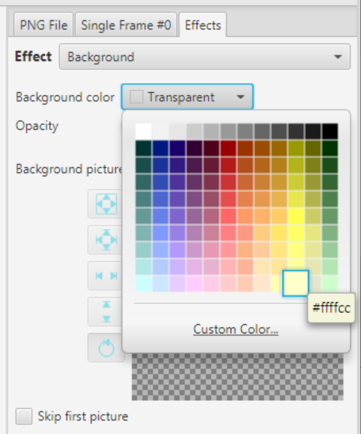
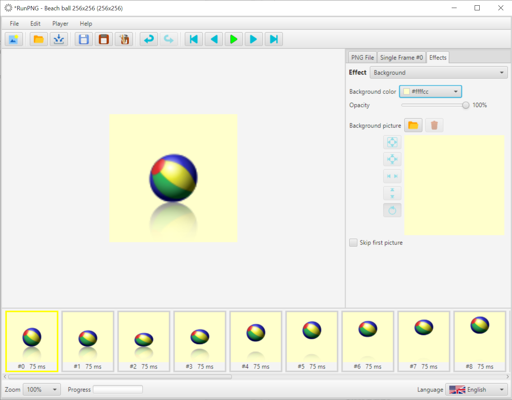
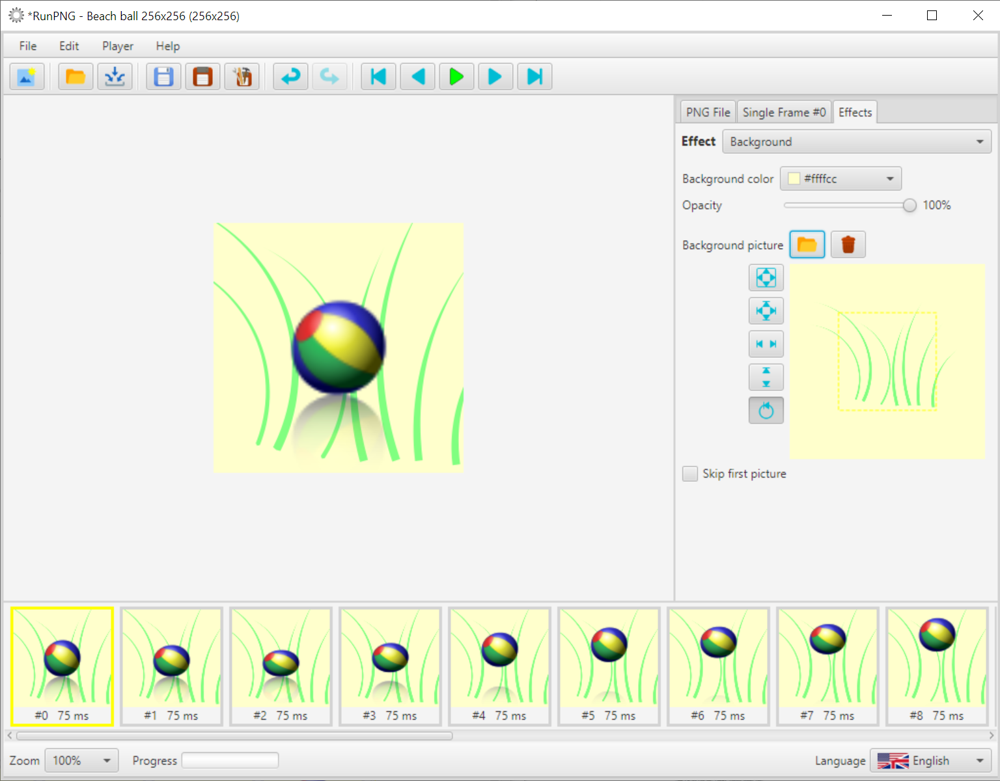
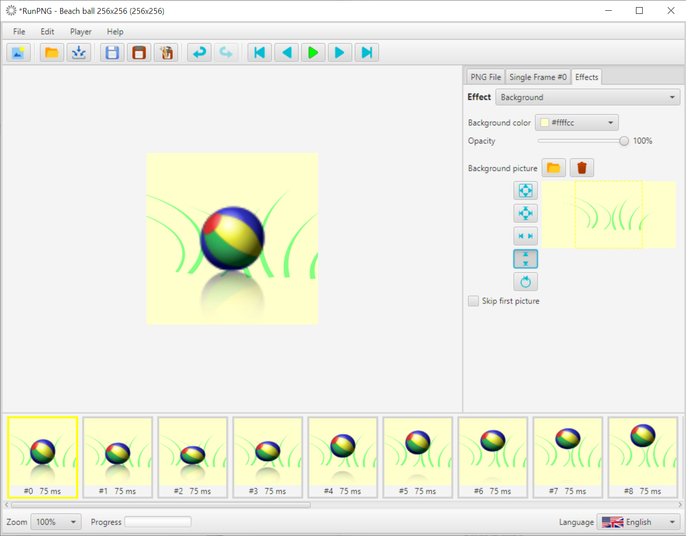

Background
A background color or a background image only makes sense if the image material is partially transparent, translucent or possibly smaller than the application setting. To try out this effect, we first load an animated beach ball into the working memory. The image is located at RunPNG/doc/samples/various/Beach ball 256x256.png. It is an APNG file and consists of 20 individual images. We don't need to change any setting.
Then we go to the Effects tab and select the Background effect. Let's start with a simple background color. To do this, click on the color picker and choose a color that could match a beach ball. If possible, no green, because the color will be added later.
The Opacity slider could be used to set how transparent the background should be. 100% corresponds to full coverage, 0% is completely transparent. In between are the translucent degrees. But let's stick with 100% here.
The selected color background is immediately transferred to the individual images. You can see that not only are the opaque parts of the ball cover the background color, but the translucent colors also blend into the new background.
Now a background image is added. It is located at RunPNG/doc/samples/various/Grass 1.png. And you can see that it is too big. It has 512 x 512 pixels.
But we can use the scaling. We compress the background image vertically with the button
 . By the way, it doesn't matter if the background still protrudes
to the left and right. This is removed by the application when the images are merged.
. By the way, it doesn't matter if the background still protrudes
to the left and right. This is removed by the application when the images are merged.